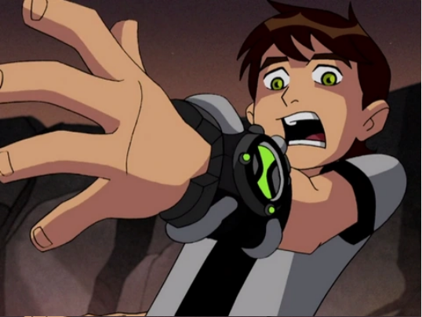
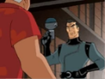
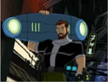
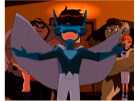

Durante as férias de verão, Ben Tennyson, um garoto de 10 anos, encontra o Omnitrix, um misterioso relógio alienígena que permite que ele se transforme em diferentes extraterrestres. Ao lado de sua prima Gwen e de seu avô Max, Ben viaja pelo país enfrentando vilões, alienígenas e aprendendo a controlar seus novos poderes. Durante suas aventuras, ele conhece inimigos como Kevin 11 e o perigoso Vilgax, que deseja roubar o Omnitrix.

Ben continua suas aventuras ao lado de Gwen e Max, enfrentando novos inimigos e descobrindo mais sobre o universo alienígena. Enquanto aprende a utilizar melhor o Omnitrix, ele encontra novos desafios, enfrenta antigos rivais e começa a entender a importância de suas responsabilidades como herói.

As aventuras de Ben ficam cada vez mais perigosas, com o surgimento de ameaças mais poderosas e inimigos determinados a conseguir o Omnitrix. Ben precisa aprimorar suas habilidades, lidar com as consequências de suas escolhas e proteger aqueles que ama, enquanto enfrenta novos desafios ao lado de sua família.

Nas últimas aventuras do verão, Ben enfrenta seus maiores desafios, incluindo o retorno de Vilgax e outras ameaças alienígenas. Com a ajuda de Gwen e Max, ele precisa usar tudo o que aprendeu para proteger a Terra e impedir que o Omnitrix caia nas mãos erradas, encerrando suas férias com grandes batalhas e descobertas.